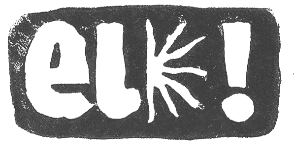
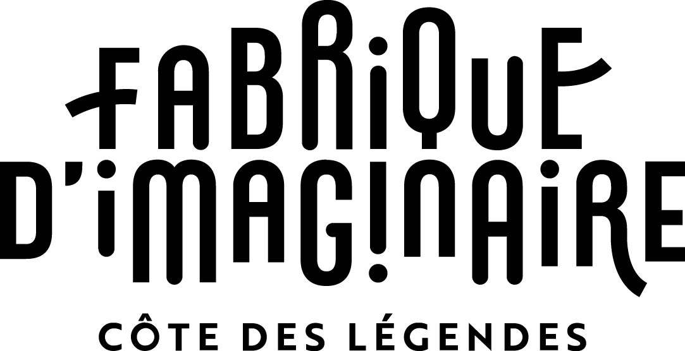
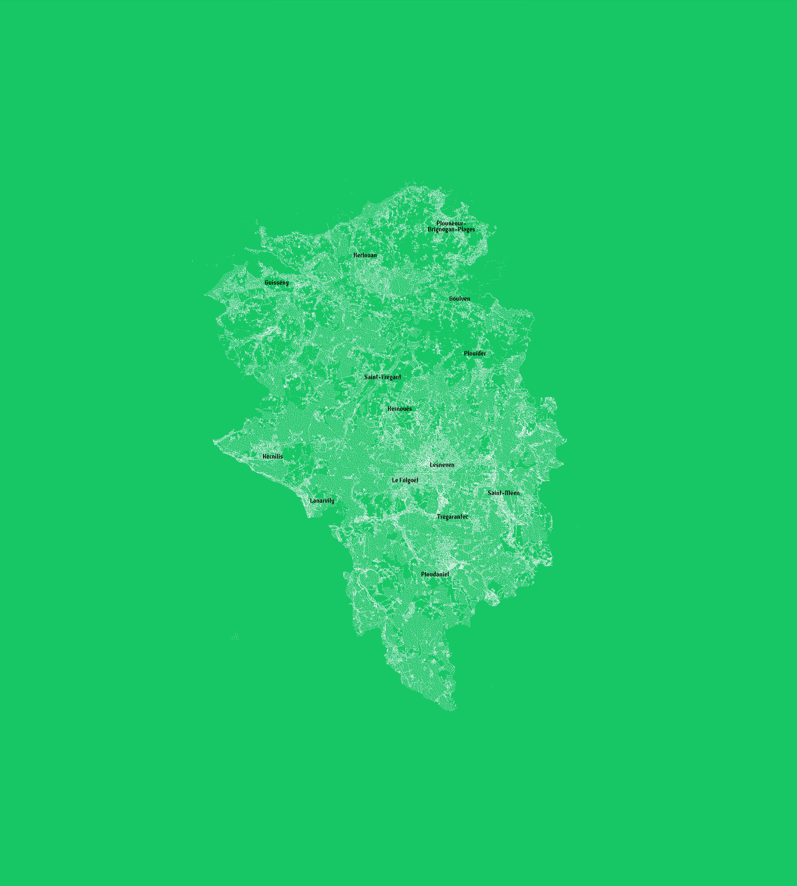

Les commun·es vécu·es
Communauté de communes Lesneven Côte des Légendes · Fabrique Imaginaire
© eloïse corlosquet — Juin 2026 · lescommunes-vecues.fr



Chaque récit déposé sur cette carte est un fragment du territoire tel qu'il est vécu, ressenti, habité. Ensemble, ils dessinent ce que les cartes ne montrent pas.
CARTE GÉNÉRÉE LE .
ARCHIVE DU TERRITOIRE À CET INSTANT.
CHAQUE IMPRESSION EST UNE LECTURE PERSONNELLE.
Communauté de communes Lesneven Côte des Légendes · Fabrique Imaginaire
© eloïse corlosquet — Juin 2026 · lescommunes-vecues.fr

